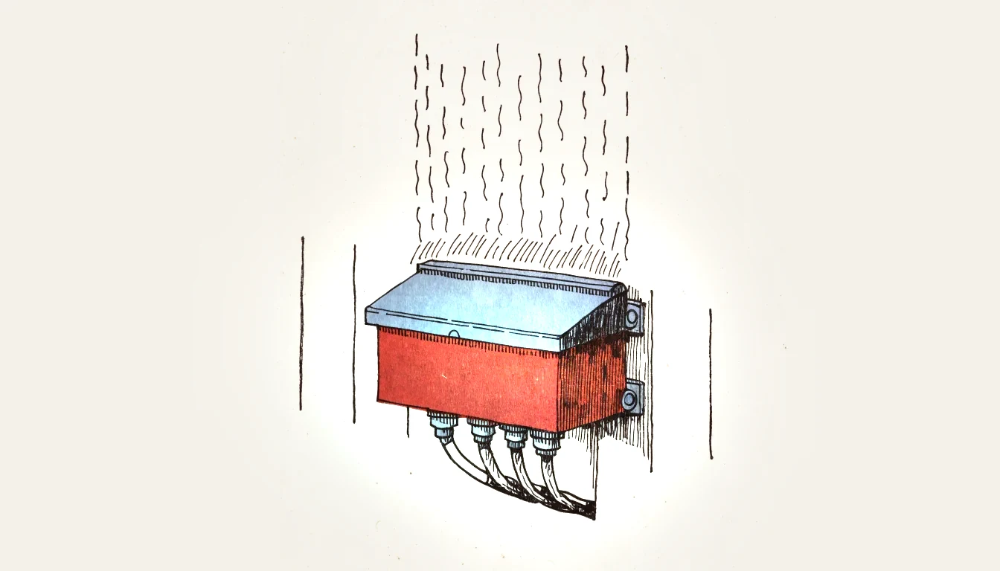
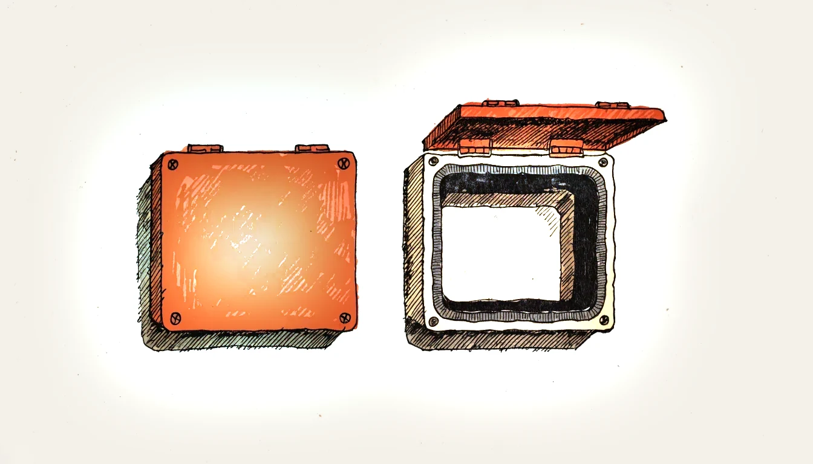
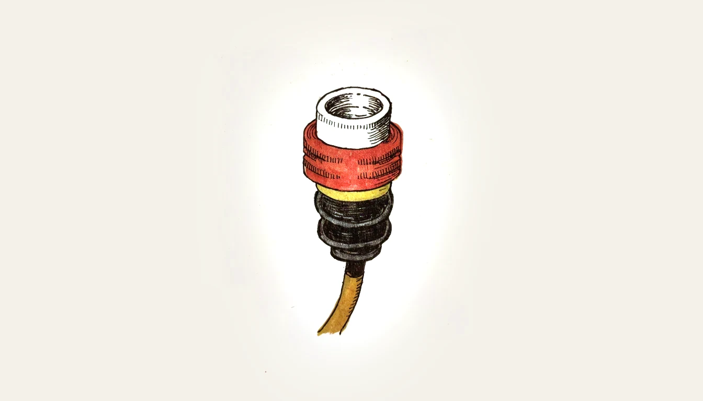

Beschrieb · Symbole · Zeichnung · Kennziffern · IK-Code Description · symbols · drawing · code digits · IK code
Die IP-Kennzeichnung sagt, wie gut ein Gehäuse sein Innenleben schützt — und ebenso wichtig: wie gut es Menschen vor dem Innenleben schützt. IP steht für International Protection, gefolgt von zwei Kennziffern.
An IP rating states how well an enclosure protects what is inside — and just as importantly, how well it protects people from what is inside. IP stands for International Protection, followed by two code digits.
IPX4 heisst: gegen Wasser geprüft (Spritzwasser), gegen Festkörper nicht angegeben. Das X ist kein Nullwert — es bedeutet nur, dass diese Eigenschaft nicht geprüft oder nicht deklariert wurde.
IPX4 means: tested against water (splashing), not specified against solid bodies. The X is not a zero — it merely means this property was not tested or not declared.

| ZifferDigit | Schutz gegen FremdkörperProtection against solid bodies | Schutz gegen BerührungProtection against contact |
|---|---|---|
| 0 | kein Schutzno protection | kein Schutzno protection |
| 1 | Fremdkörper ab 50 mmobjects from 50 mm | Handrückenback of the hand |
| 2 | Fremdkörper ab 12,5 mmobjects from 12.5 mm | Fingerfinger |
| 3 | Fremdkörper ab 2,5 mmobjects from 2.5 mm | Werkzeug, dicker Drahttools, thick wire |
| 4 | Fremdkörper ab 1 mmobjects from 1 mm | Drahtwire |
| 5 | staubgeschützt — Staub darf eindringen, aber nicht schadendust protected — dust may enter but must not impair | vollständigcomplete |
| 6 | staubdicht — kein Staub dringt eindust tight — no ingress of dust | vollständigcomplete |
Die Prüfkörper werden kleiner: Handrücken, Finger, Werkzeug, Draht. Bei 5 und 6 bleibt der Zugangsschutz mit Draht erhalten; zusätzlich unterscheiden die Ziffern den Staubschutz. Die Prüfung gilt unter definierten Bedingungen, nicht gegen jede denkbare Berührung.
The probes become smaller: hand, finger, tool, wire. At 5 and 6, wire access protection remains; the digits additionally distinguish dust protection. Tests use defined conditions and do not cover every conceivable contact.
| ZifferDigit | Schutz gegenProtection against | PrüfbedingungTest condition |
|---|---|---|
| 0 | kein Schutzno protection | — |
| 1 | Tropfwasserdripping water | senkrecht fallendfalling vertically |
| 2 | Tropfwasser schrägdripping water, tilted | bis 15° Neigungup to 15° tilt |
| 3 | Sprühwasserspraying water | bis 60° zur Senkrechtenup to 60° from vertical |
| 4 | Spritzwassersplashing water | aus allen Richtungenfrom all directions |
| 5 | Strahlwasserwater jets | Düse, aus allen Richtungennozzle, from all directions |
| 6 | starkes Strahlwasserpowerful water jets | Sturzwasser, Schiffsdeckheavy seas, ship decks |
| 7 | zeitweiliges Untertauchentemporary immersion | definierte Tiefe und Zeitdefined depth and time |
| 8 | dauerndes Untertauchencontinuous immersion | Bedingungen nach Herstellerangabeconditions per manufacturer |
| 9 | Hochdruck- und Dampfstrahlreinigunghigh-pressure and steam cleaning | heisses Wasser unter hohem Druckhot water at high pressure |
Die Wasserschutzprüfungen sind ab Untertauchen nicht durchgehend aufsteigend. IPX7 weist nicht automatisch Strahlwasserschutz nach. Für starkes Strahlwasser und zeitweiliges Untertauchen ist beispielsweise IPX6/IPX7 erforderlich. IPX9 ist eine eigene Hochdruck-Heisswasserprüfung.
Water tests are not a continuous hierarchy once immersion is included. IPX7 does not automatically demonstrate water-jet protection. Strong jets and temporary immersion require, for example, IPX6/IPX7. IPX9 is a separate high-pressure hot-water test.
| IP | BedeutungMeaning | Typischer EinsatzortTypical location |
|---|---|---|
| IP20 | fingersicher, kein Wasserschutzfinger-safe, no water protection | Verteiler und Geräte im trockenen Innenraumboards and devices in dry interiors |
| IP40 | drahtsicher, kein Wasserschutzwire-safe, no water protection | Innenverteilung, Schaltschrankindoor distribution, control panels |
| IP44 | drahtsicher, allseitig spritzwassergeschütztwire-safe, splash-proof from all sides | Aussensteckdosen, Bad, Waschkücheoutdoor sockets, bathrooms, laundry |
| IP54 | staubgeschützt und spritzwassergeschütztdust protected and splash-proof | Werkstatt, Landwirtschaft, staubige Räumeworkshops, agriculture, dusty rooms |
| IP65 | staubdicht und strahlwassergeschütztdust tight and jet-proof | Aussenanlagen, Reinigung mit Schlauchoutdoor installations, hose cleaning |
| IP67 | staubdicht, zeitweise untertauchbardust tight, temporarily immersible | Bodeneinbau, überflutungsgefährdete Stellenfloor mounting, locations at risk of flooding |
| IP69 | staubdicht, Hochdruckreinigungdust tight, high-pressure cleaning | Lebensmittelbetriebe, Waschanlagenfood industry, vehicle washes |
Nach den beiden Ziffern kann ein Buchstabe folgen. Er präzisiert den Schutz von Personen, wenn dieser besser ist, als die erste Kennziffer vermuten lässt.
A letter may follow the two digits. It specifies the protection of persons where this is better than the first digit suggests.
| BuchstabeLetter | Geschützt gegen Zugang mitProtected against access with |
|---|---|
| A | Handrückenback of the hand |
| B | Fingerfinger |
| C | Werkzeugtool |
| D | Drahtwire |
Der IK-Code nach EN/IEC 62262 beschreibt die Widerstandsfähigkeit gegen definierte mechanische Schläge. Die Tabelle zeigt ausgewählte Stufen, keine vollständige Skala. IP beschreibt dagegen Zugang und Eindringen; beide Angaben erfüllen verschiedene Aufgaben.
The IK code under EN/IEC 62262 describes resistance to defined mechanical impacts. The table shows selected levels, not the entire scale. IP instead covers access and ingress; the two ratings serve different purposes.
| IK | SchlagenergieImpact energy | Typischer EinsatzTypical use |
|---|---|---|
| IK02 | 0,2 J | geschützter Innenraumprotected interior |
| IK07 | 2 J | öffentlich zugängliche Bereichepublicly accessible areas |
| IK08 | 5 J | Turnhalle, Werkstattgymnasium, workshop |
| IK10 | 20 J | Tiefgarage, Unterführung, vandalismusgefährdetcar parks, subways, vandalism-prone |
Für eine Sporthalle ist ein Nachweis der Ballwurfsicherheit für Leuchte, Zubehör und Montageart massgebend. Ein hoher IK-Wert ersetzt diesen Nachweis nicht. Die IP-Schutzart ist zusätzlich passend zu Staub, Feuchtigkeit und Reinigung zu wählen.
A sports hall requires verified ball-impact resistance for the luminaire, accessories and mounting arrangement. A high IK rating does not replace this verification. Select IP protection separately for dust, moisture and cleaning.

IP65 gilt für das Gehäuse in der vom Hersteller vorgesehenen Montage. Dichtungen, Kabeleinführungen und Verschlüsse gehören zum Schutzsystem. Bei fehlerhafter Montage ist die deklarierte Schutzart nicht nachgewiesen; daraus lässt sich nicht einfach ein anderer IP-Wert wie IP20 ableiten.
IP65 applies to the enclosure installed as specified by its manufacturer. Seals, cable entries and closures form part of the protection system. Incorrect assembly invalidates the declared protection; it does not establish another rating such as IP20.
| OrtLocation | Beispielwert, Eignung prüfenExample rating, verify suitability |
|---|---|
| Wohnraum, Büro (trocken)living room, office (dry) | IP20 |
| Badezimmer ausserhalb der Bereichebathroom outside the zones | IP20 … IP44 |
| Badezimmer Bereich 1 und 2bathroom zones 1 and 2 | IPX4 |
| Waschküche, Keller (feucht)laundry, cellar (damp) | IP44 |
| Aussenbereich, überdachtoutdoors, sheltered | IP44 |
| Aussenbereich, frei bewittertoutdoors, fully exposed | IP54 … IP65 |
| Landwirtschaft, Stallagriculture, livestock buildings | IP54 und höherand above |
| Baustelleconstruction site | IP44 und höherand above |
Diese Werte sind übliche Praxiswerte. Die verbindliche Mindestschutzart je Raumart und Zone steht in der NIN — vor der Abgabe dort nachschlagen und die Artikel zitieren.
These are common values from practice. The binding minimum rating per type of location and zone is given in the NIN — look it up before submitting and cite the articles.

Erste Ziffer 4: geschützt gegen feste Fremdkörper ab 1 mm und gegen Berührung mit einem Draht. Zweite Ziffer 4: geschützt gegen Spritzwasser aus allen Richtungen.
First digit 4: protected against solid objects from 1 mm and against contact with a wire. Second digit 4: protected against splashing water from all directions.
Dass diese Eigenschaft nicht geprüft oder nicht angegeben wurde. Es ist kein Nullwert. IPX4 heisst nur, dass gegen Spritzwasser geprüft wurde, über den Festkörperschutz sagt es nichts.
That this property was not tested or not declared. It is not a zero. IPX4 only says it was tested against splashing water; it says nothing about protection from solid bodies.
Bei 5 ist das Gehäuse staubgeschützt: Staub darf eindringen, aber nicht in einer Menge, die die Funktion beeinträchtigt. Bei 6 ist es staubdicht: Es dringt überhaupt kein Staub ein.
At 5 the enclosure is dust protected: dust may enter but not in a quantity that impairs operation. At 6 it is dust tight: no dust enters at all.
Nicht in jeder Hinsicht. Untertauchen und Strahlwasser sind verschiedene Prüfungen. Für beide Beanspruchungen eine passende Doppelkennzeichnung, beispielsweise IP65/IP67, verlangen. Auch UV-Beständigkeit, Korrosion und Einbaulage sind gesondert zu beurteilen.
Not in every respect. Immersion and water jets are different tests. Require an appropriate dual rating, such as IP65/IP67, for both. UV resistance, corrosion and mounting orientation require separate assessment.
Er kennzeichnet die Widerstandsfähigkeit gegen einen definierten mechanischen Schlag mit einer bestimmten Energie in Joule. Er ist weder ein IP-Wert noch automatisch ein Nachweis der Ballwurfsicherheit.
It specifies resistance to a defined mechanical impact with a stated energy in joules. It is neither an IP rating nor automatic proof of ball-impact resistance.
Eine fehlende Blindverschraubung, eine zu grosse oder zu kleine Kabelverschraubung, eine verdrehte oder beschädigte Dichtung, ungleichmässig angezogene Deckelschrauben und eigenmächtige Bohrungen im Gehäuse. Die Schutzart gilt nur für das fachgerecht montierte Gehäuse.
A missing blanking plug, an over- or undersized cable gland, a twisted or damaged gasket, unevenly tightened lid screws, and drilling the enclosure where it is not intended. The rating only applies to a properly assembled enclosure.
Eine für die konkrete Montage ballwurfsicher geprüfte Leuchte wählen. Der Ballwurf-Nachweis ist von IK zu unterscheiden. IP richtet sich nach Umgebungs- und Reinigungsbedingungen.
Choose a luminaire tested for ball-impact resistance in the intended mounting configuration. That verification is distinct from IK. Select IP according to environmental and cleaning conditions.
Einführungen nach unten können Wasseransammlungen vermindern. Verbindlich sind jedoch die zugelassene Einbaulage und Montageanleitung. Eine Tropfschlaufe kann Wasser ableiten, ersetzt aber weder eine geeignete Verschraubung noch deren korrekte Montage.
Downward entries can reduce water accumulation. The approved orientation and installation instructions govern. A drip loop can divert water but replaces neither a suitable gland nor correct assembly.